출발
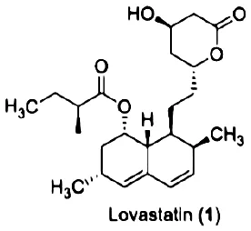
Lovastatin1
20장 스타틴 3종(Simvastatin · Atorvastatin · Rosuvastatin) + Ezetimibe + 항혈소판제(Clopidogrel · Cilostazol). KEY 20-1 DIBAL · 20-2 Fétizon · 20-3 Stetter · 20-4 Paal–Knorr · 20-5 Chelation-controlled · 20-6 CBS. 21장 당뇨병치료제 3종(Glimepiride · Rosiglitazone · Repaglinide)도 이 탭에 있어요. 가릴 항목을 고르고, 가려진 칸을 눌러 답을 확인하세요. 다시 누르면 또 가려집니다. 구조 그림은 모두 교재 스킴에서 가져왔어요.
lovastatin(천연물)에서 2-methylbutyrate를 2,2-dimethylbutyrate로 바꾸는 반합성. 경로 1: 곁사슬 에스터를 LiOH로 떼고 → TBS 보호 → 산염화물 재에스터화(DMAP) → TBAF. 경로 2: DIBAL로 락톤 → 락톨 → 아세탈 보호 → α-메틸화 → 아세탈 제거 → Fétizon 산화.
| 단계 | 핵심반응 | 무엇이 바뀌나 |
|---|---|---|
| 1 | 에스터 가수분해 (LiOH) | 2-methylbutyrate 제거 |
| 2 | TBS 보호 | 락톤 4-OH → OTBS |
| 3 | 재에스터화 (DMAP) | 막힌 OH → 2,2-dimethylbutyrate |
| 4 | TBS 제거 (TBAF) | OTBS → OH |

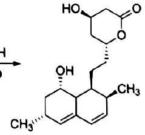
에스터 가수분해 · 2-methylbutyrate 곁사슬을 떼어내고 하이드록시산을 다시 락톤으로.
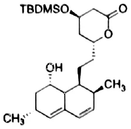
선택적 보호 · 덜 막힌 락톤 쪽 OH만 TBS. 고리의 OH는 입체장애로 남는다.
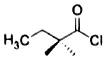
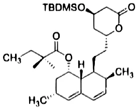
막힌 OH 에스터화 · DMAP(친핵 촉매)가 아실피리디늄을 만들어 sterically congested OH도 아실화.
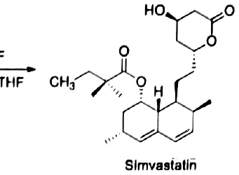
탈실릴 · F⁻가 Si를 공격(Si–F 결합이 강함) → OH.
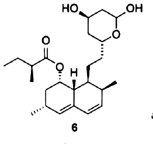
DIBAL (KEY 20-1) · 부피 큰 환원제 + 저온 → 락톤을 락톨(헤미아세탈)에서 멈춤.
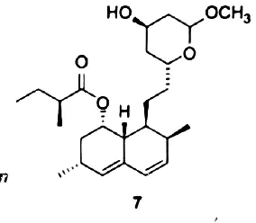
아세탈 보호 · 락톨 OH → OMe (산 촉매).
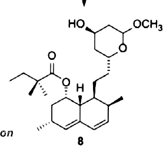
에스터 α-메틸화 · n-BuLi 엔올레이트 → MeI SN2 → 2-methyl → 2,2-dimethyl.
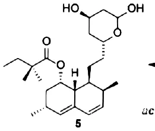
아세탈 제거 · OMe → OH (락톨).
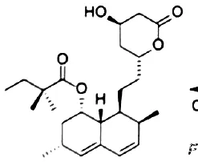
Fétizon (KEY 20-2) · Celite에 흡착한 Ag₂CO₃ → 락톨 → 락톤 (온화한 산화).
β-ketoester + aniline → 아마이드 → Knoevenagel → Stetter(1,4-diketone) → Paal–Knorr로 pyrrole → 아세탈 → CHO → dianion aldol → chelation-controlled syn 환원 → 락톤 → Ca 염.
| 단계 | 핵심반응 | 무엇이 바뀌나 |
|---|---|---|
| 1 | 아미노리시스 | CO₂Me → CONHPh |
| 2 | Knoevenagel | + PhCHO → 벤질리덴 |
| 3 | Stetter (KEY 20-3) | + ArCHO → 1,4-diketone |
| 4 | Paal–Knorr (KEY 20-4) | 1,4-diketone + RNH₂ → pyrrole |
| 5 | 아세탈 가수분해 | CH(OEt)₂ → CHO |
| 6 | Dianion aldol | CHO + 아세토아세테이트 γ-C |
| 7 | Chelation syn 환원 (KEY 20-5) | β-하이드록시 케톤 → syn-1,3-diol |
| 8 | 가수분해 → 락톤화 | → (3R,5R)-lactone |
| 9 | 개환 + Ca 염 | → Atorvastatin calcium |
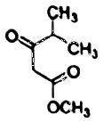
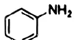
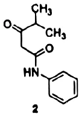
아미노리시스 · 아닐린이 에스터 C=O 공격 → MeOH 이탈 → 아닐라이드.
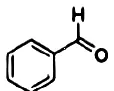
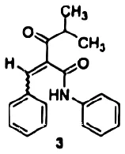
Knoevenagel · 활성 메틸렌 + PhCHO → 탈수 → Michael acceptor.
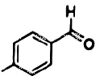
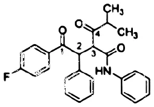
Stetter (KEY 20-3) · thiazolium ylide가 알데하이드에 붙어 Breslow 중간체(극성 반전, umpolung) → 아실 음이온 등가체가 enone에 1,4-부가 → 1,4-dicarbonyl.
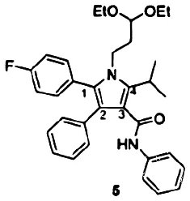
Paal–Knorr (KEY 20-4) · 1,4-diketone + 1차 아민 → 헤미아미날 → 고리 → 탈수 2번 → pyrrole.
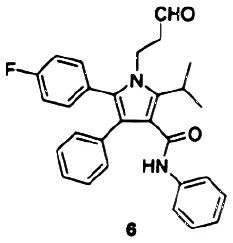
아세탈 가수분해 → CHO.
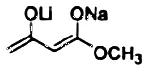
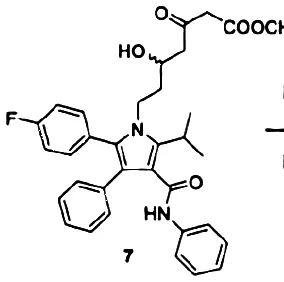
이중 음이온 aldol · 두 번째로 생긴 더 반응성 큰 γ-탄소 음이온이 CHO를 공격.
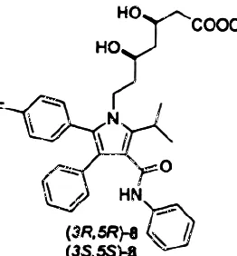
KEY 20-5 (Narasaka–Prasad) · Et₃B(Et₂BOMe)가 β-OH와 C=O를 킬레이션 → 외부 hydride가 한쪽에서 → syn-1,3-diol. H₂O₂로 붕소 제거.
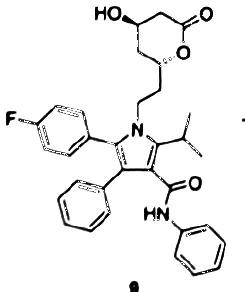
에스터 가수분해 → 가열하면 δ-하이드록시산이 락톤. (광학분할로 (3R,5R))
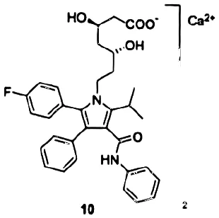
락톤 개환 → 카복실레이트 2개 + Ca²⁺.
Knoevenagel → S-methylisothiourea로 pyrimidine + DDQ 방향족화 → SMe를 mCPBA로 설폰(이탈기) → MeNH₂ SNAr + MsCl → 에스터 → DIBAL · TPAP로 CHO → Wittig → HF · chelation syn 환원 → Ca 염.
| 단계 | 핵심반응 | 무엇이 바뀌나 |
|---|---|---|
| 1 | Knoevenagel | ArCHO + β-ketoester |
| 2 | Pyrimidine 형성 + DDQ 방향족화 | + isothiourea → 2-SMe pyrimidine |
| 3 | S-산화 (mCPBA) | SMe → SO₂Me |
| 4 | SNAr + 설폰아마이드 | SO₂Me → N(Me)SO₂Me |
| 5 | DIBAL → TPAP | CO₂Et → CH₂OH → CHO |
| 6 | Wittig | CHO + ylide → (E)-C=C |
| 7 | HF · syn 환원 (KEY 20-5) | OTBS → OH, C=O → syn-diol |
| 8 | 가수분해 | CO₂Me → CO₂Na |
| 9 | Ca 염 | CaCl₂ |
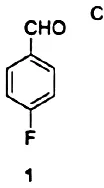
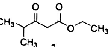
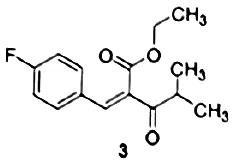
Knoevenagel · E/Z 1 : 1 혼합물.
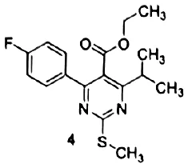
isothiourea의 두 N이 1,4-부가 + 축합 → dihydropyrimidine → DDQ가 H⁻를 뺏어 방향족화.
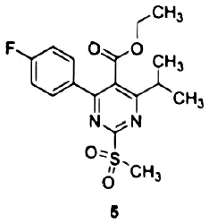
S-산화 · SMe → SO₂Me (좋은 이탈기).
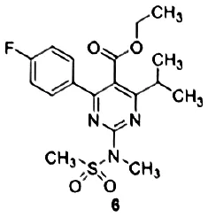
SNAr · pyrimidine C2(두 N 사이)에 MeNH₂ → MeSO₂⁻ 이탈 → MsCl로 N-Ms.
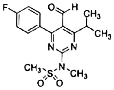
DIBAL로 에스터 → 알코올, TPAP/NMO(Ley 산화)로 → CHO.
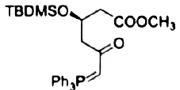
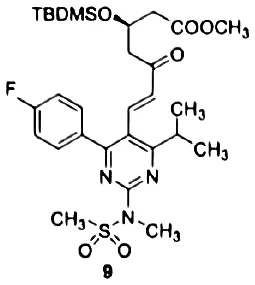
Wittig · 안정화 ylide → (E)-alkene.
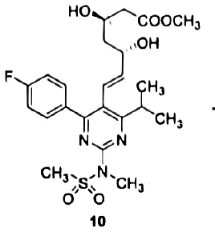
HF로 TBS 제거 → KEY 20-5 Et₂BOMe 킬레이션 → NaBH₄ → syn-1,3-diol (단일 생성물).
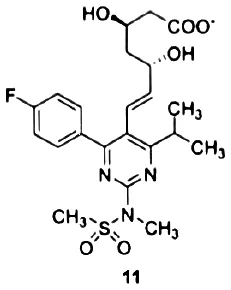
메틸 에스터 → Na 카복실레이트.
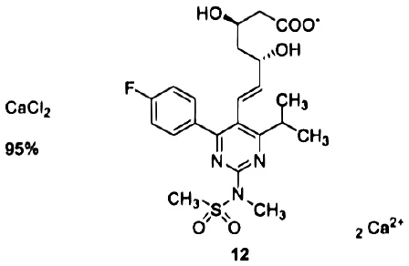
Na → Ca 염 교환.
경로 1: 이민 + ketene Staudinger [2+2]로 β-lactam → 에스터 가수분해 → 산염화물 + ArZnBr(Pd) → BH₃ 환원 → 탈벤질. 경로 2: 키랄 락톤 dianion + 이민 → NaIO₄ 절단 → Mukaiyama aldol → 탈수 → 수소화 → CBS 환원.
| 단계 | 핵심반응 | 무엇이 바뀌나 |
|---|---|---|
| 1 | Schiff base | ArCHO + ArNH₂ → C=N |
| 2 | Staudinger [2+2] | ketene + imine → β-lactam |
| 3 | 에스터 가수분해 | CO₂Me → CO₂H |
| 4 | 산염화물 + Negishi형 커플링 | COOH → C(=O)Ar |
| 5 | 케톤 환원 (BH₃) | C=O → CH–OH |
| 6 | 탈벤질 | OBn → OH |
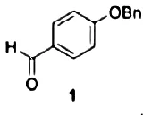
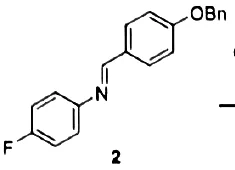
이민 · ArNH₂ + ArCHO → 탈수 → C=N.
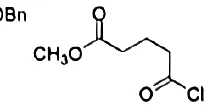
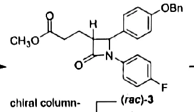
Staudinger · Bu₃N이 산염화물에서 HCl을 빼 ketene → 이민 N이 ketene 중심 C 공격 → 쯔비터이온 → conrotatory 고리닫힘 → 4원 β-lactam (trans).
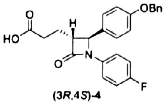
선택적 에스터 가수분해 (β-lactam은 유지).
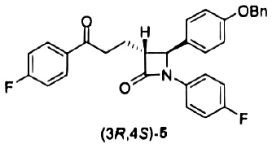
산염화물 + 아릴아연 + Pd⁰ → 아릴 케톤 (Negishi형 교차 커플링).
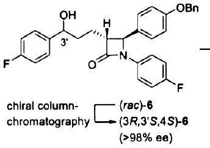
BH₃ 환원(라세미) → 키랄 컬럼으로 3′S.
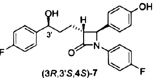
탈벤질 · OBn → 페놀 OH.
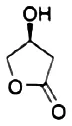
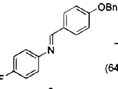
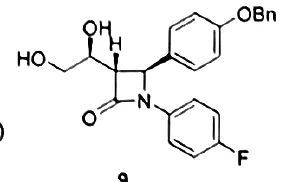
LDA 2당량 → dianion → 이민에 부가(β-OH 반대쪽) → N⁻가 락톤 C=O를 공격 → azetidinone (trans 우세).
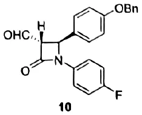
NaIO₄ · 1,2-diol C–C 절단 → 2차 OH 쪽은 CHO, 1차 OH 쪽은 HCHO.
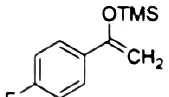
Mukaiyama aldol · TiCl₄(Lewis 산)가 CHO 활성화 → TMS 엔올 에테르가 공격 → β-하이드록시 케톤.
산 촉매 탈수 → 공액 enone.
C=C 수소화 + 벤질 제거 한 번에.
CBS (KEY 20-6) · BSU로 페놀 OH를 in situ TMS 보호 → 옥사자보롤리딘 촉매 + BH₃ → (S)-알코올 97% ee (보호 안 하면 84% ee).
경로 1: 2-chlorophenylglycine → 메틸 에스터 → (+)-주석산 분할 → thienylethyl tosylate SN2 → HCHO/HCOOH Mannich 고리화. 경로 2: 티오펜 아민 Mannich 고리화 → Strecker → 부분 가수분해(아마이드) → 캠퍼설폰산 분할 → 메탄올리시스.
| 단계 | 핵심반응 | 무엇이 바뀌나 |
|---|---|---|
| 1 | Fischer 에스터화 | CO₂H → CO₂Me |
| 2 | 광학분할 | rac → (+) |
| 3 | SN2 N-알킬화 | NH₂ + CH₂OTs |
| 4 | Mannich 고리화 | NH + HCHO → 이미늄 → 티오펜 C3 공격 |
Fischer 에스터화.
광학분할 · 부분입체이성질체 염 결정화.
SN2 · 아민이 OTs 치환.
Mannich 고리화 · 2차 아민 + HCHO → 이미늄 → 티오펜 C3가 공격 → 6원 고리 → 방향족성 회복 → thieno[3,2-c]pyridine.
같은 Mannich 고리화를 먼저.
Strecker · 2차 아민 + ArCHO → 이미늄 → CN⁻ 부가.
부분 가수분해 · CN → CONH₂에서 멈춤.
캠퍼설폰산으로 분할.
산 촉매 메탄올리시스 · CONH₂ → CO₂Me.
cyclohexylamine + 5-chlorovaleryl chloride Schotten–Baumann 아마이드 → PCl₅ · HN₃로 아마이드를 테트라졸로 → 하이드록시퀴놀리논과 Williamson. 3단계.
| 단계 | 핵심반응 | 무엇이 바뀌나 |
|---|---|---|
| 1 | Schotten–Baumann 아마이드화 | RNH₂ + RCOCl → RCONHR |
| 2 | 이미도일 클로라이드 → 테트라졸 | CONH → tetrazole |
| 3 | Williamson 에테르 | ArOH + R–Cl → ArO–R |
Schotten–Baumann · 2상(유기/물) + 염기가 HCl 포집 → 아마이드.
PCl₅로 아마이드 C=O → 이미도일 클로라이드 → HN₃ 부가 · 고리화 → 1,5-이치환 테트라졸.
Williamson · 페녹사이드가 CH₂Cl을 SN2.
활성 메틸렌 α-에틸화 → 케톤에만 KCN → H₂/Ra-Ni + Ac₂O로 CN을 아민으로 바꾸면서 고리를 닫아 피롤리논 → 이소시아네이트로 우레아 → ClSO₃H · NH₄OH로 설폰아마이드 → 다시 이소시아네이트로 설포닐우레아. 이소시아네이트를 두 번 쓴다.
| 단계 | 핵심반응 | 무엇이 바뀌나 |
|---|---|---|
| 1 | α-알킬화 (NaOEt / EtI) | 활성 메틸렌 CH₂ → CH(Et) |
| 2 | 시아노하이드린 (KCN) | 케톤 C=O → C(OH)CN |
| 3 | 환원 · 아세틸화 · 고리화 | CN → CH₂NH₂ → N-아세틸 락탐 |
| 4 | 탈아세틸 (Na₂CO₃) | N–Ac → N–H |
| 5 | 이소시아네이트 부가 | 락탐 N–H → 우레아 |
| 6 | Chlorosulfonation → NH₄OH | Ar–H → Ar–SO₂Cl → Ar–SO₂NH₂ |
| 7 | 이소시아네이트 부가 | SO₂NH₂ → 설포닐우레아 |
α-알킬화 · 두 C=O 사이 CH₂를 NaOEt가 떼고 엔올레이트가 EtI를 SN2. 이 에틸이 나중에 피롤리논 3번 탄소의 에틸이 된다.
시아노하이드린 · CN⁻는 케톤만 공격한다. 에스터는 OEt 산소가 카보닐에 전자를 밀어 넣어 덜 친전자성.
환원 · 고리화 · CN → CH₂NH₂, 생긴 NH₂와 OH를 Ac₂O가 아세틸화(중간체 A). 아마이드 N이 에스터를 분자내 공격(−EtOH)해 5원 락탐, OAc가 빠지며 고리 안에 C=C.
탈아세틸 · 이미드처럼 활성화된 N-아세틸만 약염기로 떨어진다. 고리 락탐은 그대로.
우레아 형성 · 락탐 N–H가 이소시아네이트 C(O와 N 사이라 강한 친전자체)를 공격 → 양성자 이동 → N-카바모일 락탐.
Chlorosulfonation (SEAr) · ClSO₃H 두 분자가 만든 친전자체를 벤젠 para가 공격 → Ar–SO₂Cl. 이어 NH₃가 S를 공격하고 Cl⁻가 빠져 Ar–SO₂NH₂.
설포닐우레아 · SO₂NH₂의 N이 이소시아네이트 C를 공격. 5단계와 같은 기구이고 trans 배치는 시약에서 그대로 온다.
SNAr를 두 번 — 2-chloropyridine에는 친핵성이 큰 N이, 4-fluorobenzaldehyde에는 NaH로 만든 알콕사이드가 붙는다. 이어 thiazolidine-2,4-dione과 Knoevenagel, 생긴 C=C를 Mg/MeOH로 환원(황이 Pd 촉매독). Rhodotorula rubra를 쓰면 (R)-체.
| 단계 | 핵심반응 | 무엇이 바뀌나 |
|---|---|---|
| 1 | SNAr (피리딘 C2) | 2-Cl → 2-N(Me)CH₂CH₂OH |
| 2 | SNAr (NaH, F 이탈) | R–OH → R–O–Ar(CHO) |
| 3 | Knoevenagel | CHO + TZD 활성 CH₂ → C=CH |
| 4 | C=C 환원 (Mg/MeOH) | 벤질리덴 → 벤질 (라세미) |
SNAr · OH보다 NH가 친핵성이 커서 N이 붙는다. 고리 N이 C2에 생긴 음전하를 받아줘(Meisenheimer 착물) Cl⁻가 빠진다.
SNAr · NaH로 만든 알콕사이드가 F 붙은 탄소를 공격. para-CHO가 음전하를 받고 F⁻가 빠진다. 첨가가 느린 단계라 F가 Cl보다 잘 나간다.
Knoevenagel · 피페리딘 + CHO로 생긴 이미늄을 TZD의 엔올(C5)이 공격 → 피페리딘이 빠지며 C=C. Dean–Stark로 물을 빼 평형을 민다.
전자 전달 환원 · Mg가 전자를 하나씩 두 번 주고 MeOH가 양성자를 준다. H₂/Pd-C는 TZD의 황이 촉매독이라 쓰기 어렵다. C5는 라세미.
생체촉매 환원 · red yeast가 C=C를 한쪽 면에서만 환원해 (R)-체를 준다.
2-chlorobenzonitrile에 피페리딘 SNAr → 니트릴에 i-BuMgBr(이민에서 멈춤) → 환원으로 라세미 아민 → 산염화물과 아마이드화 → 에스터 가수분해. (S)-체는 아민 4를 (S)-N-acetylglutamic acid로 광학분할한 뒤 같은 순서를 밟는다.
| 단계 | 핵심반응 | 무엇이 바뀌나 |
|---|---|---|
| 1 | SNAr | Ar–Cl → Ar–N(피페리딘) |
| 2 | Grignard (니트릴) | C≡N → C=NH (i-Bu 부가) |
| 3 | 이민 환원 | C=NH → CH–NH₂ (라세미) |
| 4 | 아마이드화 (Et₃N) | RNH₂ + ArCH₂COCl → 아마이드 |
| 5 | 에스터 가수분해 | CO₂Me → CO₂H |
| 분할 | 부분입체 염 → 재결정 → NH₃ | (rac)-4 → (S)-4 |
SNAr · ortho-CN이 Meisenheimer 착물의 음전하를 받아준다 → Cl⁻ 이탈. 피페리딘 과량, 고온.
Grignard · i-Bu가 C≡N 탄소에 한 번만 부가해 N–MgBr 이민 염에서 멈춘다 → NH₄Cl로 양성자화 → C=NH.
이민 환원 · C=N에 H가 붙어 1차 아민. 새 입체중심이 생기지만 선택성이 없어 라세미.
아마이드화 · 아민이 산염화물 C=O를 공격하고 Cl⁻가 빠진다. Et₃N이 HCl을 잡는다.
비누화 · 메틸 에스터 → 카복실레이트 → 산 처리로 COOH. 아마이드는 남는다.
부분입체 염 · 키랄 산과 만든 두 염은 거울상이 아니라 용해도가 다르다.
재결정 · 덜 녹는 (S,S′) 염만 결정으로 얻는다.
염 해리 · 염기로 키랄 산을 떼어내 (S)-아민만 회수.
같은 순서 · 산염화물 아마이드화 → 에스터 비누화. 입체중심은 반응하지 않아 (S)가 유지된다.
구조식은 골격 구조입니다. 선 끝은 메틸기, 꺾인 지점은 탄소입니다. 카드 윗선 색: 갈색 = 출발물질, 회색 = 중간체, 보라 = 시약·반응 상대, 청록 = 최종 생성물. 노란 배경은 그 단계에서 가장 자주 묻는 포인트입니다. 쐐기(굵은 삼각형) = 앞으로, 점선 쐐기 = 뒤로.
© 면역반 민서정리 @water_.color_